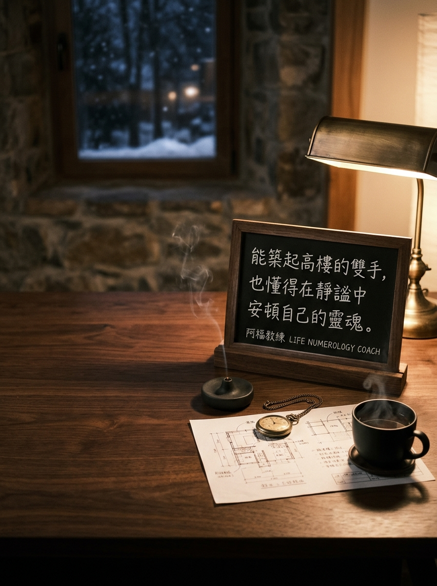

NOVEMBER 22 · MASTER BUILDER'S INNER SANCTUARY
11/22 壽星
生日快樂
「能築起萬丈高樓的雙手，也懂得在靜謐中安頓靈魂。」
生日數能量：築夢大師・宏偉結構・實踐・穩固
流年 7 主題：沉澱・內省・理解・智慧
A YEAR OF DEEP REFLECTION FOR THE MASTER BUILDER
在打造宏偉王國的征途中，給心靈一段澄澈對話的留白
迎向 2026 流年 7 的向內沉澱週期，宇宙想邀請自帶「築夢大師」天賦的 22/4 號人暫時放慢腳步：身為雙倍溫柔共感（22）與超強落地執行力（4）結合的卓越數壽星，你擁有將遠大理想化為現實工程的非凡才華，總是肩負重任、為眾人搭建穩固舞台；然而今年最珍貴的突破不是向外擴張，而是「向內探尋核心智慧」。給自己一段不受打擾的靜謐時光，梳理思緒、升級心靈維度，當你的內在澄明如鏡，下一階段築起的基業將更加無可限量。
年度提問｜「在為世界搭建了這麼多穩固城堡之後，我的內心現在最渴望怎樣的安靜與滋養？」
YOUR ENERGY DJ · 22/4 號人的流年 7 靜思點播站
當築夢踏實的 22/4 大師，走進深邃內省的流年 7
身為習慣扛起大工程、把理想化為現實的 22/4 號壽星，走入「流年 7」的智慧休耕期，這是宇宙給你最棒的心靈充電！今天 DJ 特別為你調配流年 7 沉澱洞察歌單——卸下長期緊繃的重擔，在寧靜中聽見靈魂深處的聲音！
LIFE NUMBER 7 · CLASSROOM PLAYLIST
7 號人課堂激勵與歡唱歌單（給 22/4 號人的流年 7 能量歌單）
這份歌單來自阿福教練生命靈數課堂中，專為流年 7 主題（沉澱・內省・理解・智慧）所調配的經典曲目。點擊任一曲目即可開啟 YouTube 搜尋聆聽，陪伴你在新的一歲調頻對齊、綻放光芒！
- 01達爾文蔡健雅｜深度開場・以成長與懂得的角度引導內省，安靜看見自己的蛻變（YouTube 搜尋）
- 02山丘李宗盛｜人生洞見・討論經驗與深度的生命視角，放下刻板的標準答案（YouTube 搜尋）
- 03旅行的意義陳綺貞｜提問練習・用探索與留白帶出「我真正想追尋的是什麼」之思考（YouTube 搜尋）
- 04逆光孫燕姿｜突破盲點・鼓勵在不確定中持續向內尋找真實信念與光芒（YouTube 搜尋）
- 05如煙五月天｜回顧反思・回顧走過的路，整理真正重視的生命核心原則（YouTube 搜尋）
- 06無眠蘇打綠｜沉澱轉場・內省靜謐氛圍，適合安靜整理思緒、排解緊繃壓力（YouTube 搜尋）
- 07大海張雨生｜情感深度・提醒理性也能溫柔接納情緒，讓思考更完整宏大（YouTube 搜尋）
- 08聽媽媽的話周杰倫｜價值收束・從深奧哲思回歸樸實生活的溫暖原則，輕鬆收尾（YouTube 搜尋）
歌單依《生命靈數7號人_激勵九首與歡唱點播歌單》整理。點播連結均為 YouTube 官方影音搜尋結果；播放時請依授課場地與著作權規範使用。
願你既有建造世界的宏大魄力，也有安頓靈魂的深邃智慧，在寧靜中湧現無窮力量。
👉 11/22 壽星快來留言【🏛️】！為新的一歲許下最棒的心願！
#11月22日生日快樂 #生命靈數 #生日數22 #卓越數22 #生日數4 #流年7 #築夢大師 #向內沉澱 #阿福教練